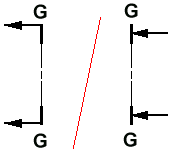
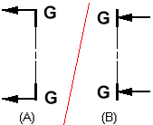
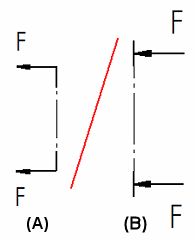

Caption Format tab (Drawing View Style dialog box)
The Caption Format tab is displayed in the Drawing View Style dialog box when creating a drawing view style using the Styles command. It specifies the appearance of a drawing view caption and of a view annotation caption.
The options that are available vary with the caption type.
- Format
-
Specifies the appearance of the drawing view and view annotation primary caption and secondary caption independently of one another.
- Caption type
-
- Primary caption of drawing views and view annotations
-
Specifies that all of the Caption Format tab options below are applied to the primary caption.
- Secondary caption of drawing views
-
Specifies that all of the Caption Format tab options below are applied to the secondary caption.
Note:View annotations only use the primary caption type.
- Font
-
Lists the available fonts. Applies the font to the currently selected Caption type.
Note:You should choose a font that supports all of the characters that you intend to use in captions. For example, the Arial Unicode font supports all characters that can be selected using the Microsoft Character Map dialog box, including Chinese, Japanese, and Russian language characters.
- Font style
-
Applies Regular, Bold, Italic, or Bold Italic font style to the currently selected Caption type.
- Font Size
-
Specifies the text size for the text in the currently selected Caption type.
- Color
-
Specifies the text color for the currently selected Caption type.
- Alignment
-
Specifies caption text alignment with respect to the number of lines of text.
- Fill text with background color
-
Fills the text with the current background color. The background color of the drawing sheet is set on the Colors page (Solid Edge Options dialog box).
You can use this to add blank space around caption or label text that interferes with other elements on the drawing.
- Separator
-
Displays a horizontal separator line between the primary caption text and the secondary caption text.
- Use units, secondary units, and spacing from this dimension style
-
The dimension style controls the units, secondary units, and spacing values used in the drawing view style and view annotation style.
You can verify the values and other settings for the dimension style using the following tabs in the Dimension Style dialog box:
- Location
-
- Drawing view caption location
-
Caption location options are:
-
Top—Above the drawing view.
-
Bottom—Below the drawing view.
-
- Cutting plane caption location
-
Specifies where the cutting plane caption text is placed in relation to the cutting plane and its view direction lines. The terminator type can be set to any of the available options, or it can be blank.
The following examples illustrate the caption location options.
Note:In the following examples:
-
When the cutting plane view direction line terminator is set to Point away from the cutting plane, then the text is positioned as shown at (A).
-
When the cutting plane view direction line terminator is set to Point toward the cutting plane, then the text is positioned as shown in (B).
- Cutting Plane End
-
Positions the cutting plane caption text in line with, and offset from, the ends of the cutting plane.
When this option is set, the caption text is positioned the same whether the view direction line terminators point toward or away from the cutting plane.

- Direction Line Open End
-
Positions the cutting plane caption text at the open end of the view direction lines.

- Direction Line Connected End
-
Positions the cutting plane caption text at the end of the direction line that is connected to the cutting plane.

- Direction Line Outside Open End
-
Positions the cutting plane caption text outside the open end of the view direction line, and aligned with the tail of the terminator.

-
- Locate viewing plane caption option at terminator end
-
Sets the position of the caption text for a viewing plane.
-
When this box is checked, the caption is placed at the terminator end of the viewing plane line.
-
When unchecked, the caption is placed at the non-terminator end of the viewing plane line.
Note:Viewing planes are used to create auxiliary drawing views.

-
- Drawing view sheet number location in view annotation caption
-
Specifies where the drawing view sheet number appears within the view annotation caption when a cutting plane or viewing plane is placed on the drawing. You can show the sheet number at the left arrow, at the right arrow, or at both arrows.